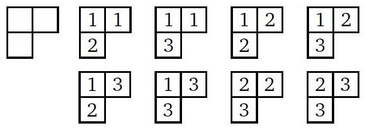

Trong quá trình học tập thuật toán và tham gia các diễn đàn thuật toán, An đã quen được một người bạn nước ngoài tên Vasya giới thiệu cho một trò chơi trí tuệ, Vasya nói rằng trò chơi ngày có thể giúp ích rất nhiều trong việc phát triển tư duy thuật toán của mỗi người. Trò chơi được mô tả như sau: Cho một tấm bảng gồm các ô vuông với các quy tắc sau:
- Các ô trên mỗi dòng và mỗi cột được đặt liên tục nhau.
- Các hàng ngang đều được căn theo lề trái.
- Số ô vuông ở dòng dưới không được lớn hơn số ô vuông của dòng trên nó.
- Mỗi ô vuông trong bảng chứa một con số nguyên dương X bất kì mà 1 ≤ X ≤ N.
- Giá trị chứa trong ô vuông bên trái không được lớn hơn ô bên phải nó.
- Giá trị chứa trong ô vuông ở hàng trên phải nhỏ hơn hàng bên dưới.
Ví dụ: với một bảng gồm 2 dòng và kích thước của 2 dòng lần lượt là 2, 1, N = 3 thì ta sẽ có 8 cách đánh số như sau:

Yêu cầu của trò chơi là cho kích thước của bảng và giới hạn N, phải tìm ra được số cách đánh số cho bảng tương ứng.
Mặc dù An đã tìm ra cách đánh số bằng tay, nhưng để có thể tìm ra được số cách đánh số tổng quát một cách nhanh chóng thì cậu ta lại không thể tìm ra được, vì thế cũng không thể kiểm tra được đáp án của mình đưa ra có đúng hay không.
Bạn hãy giúp An tính bằng một cách nhanh nhất xem với kích thước bảng và số N cho trước, có bao nhiêu cách đánh số lên bảng mà thỏa yêu cầu trên nhé.
Dữ liệu nhập: Gồm nhiều test case, mỗi test case được biểu diễn trên 2 dòng:
- Dòng đầu tiên chứa một số nguyên dương M - số lượng hàng ngang của bảng. Tiếp theo là M số nguyên dương A1, A2, ... AM với Ai là số lượng ô vuông tại hàng ngang thứ i tính từ trên xuống (dữ liệu đảm bảo 1 ≤ AM ≤ AM-1 ≤ ... ≤ A2 ≤ A1 ≤ 7).
- Dòng thứ hai chứa số nguyên dương N - giới hạn tối đa của các giá trị mà các ô có thể chứa (M ≤ N ≤ 7).
Dữ liệu xuất: Với mỗi test case xuất ra trên một dòng, chứa một số nguyên duy nhất là kết quả tìm được.